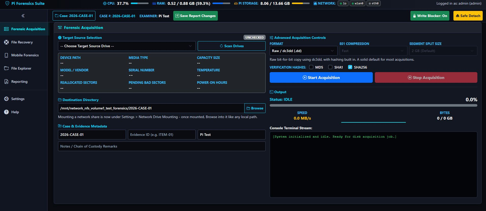
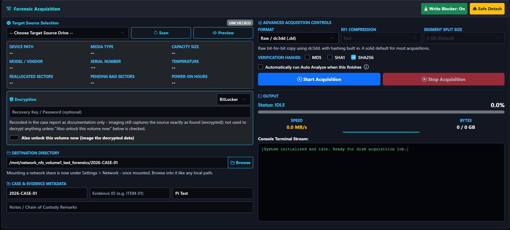
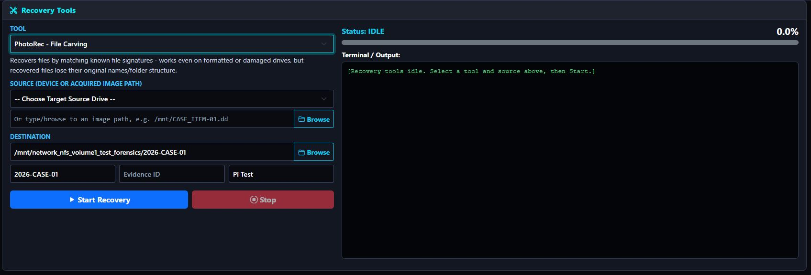
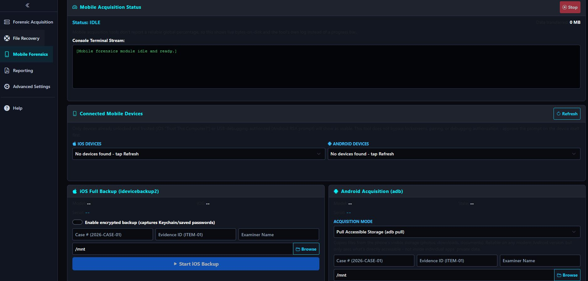
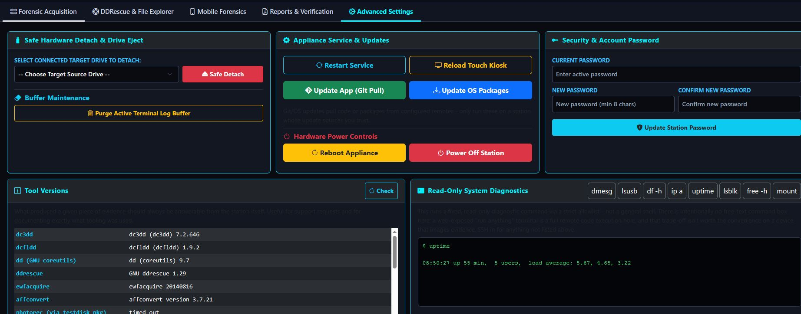
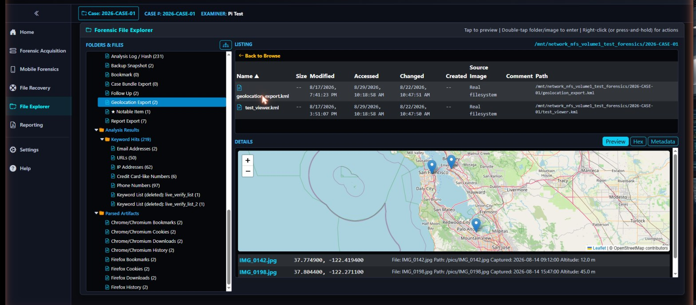
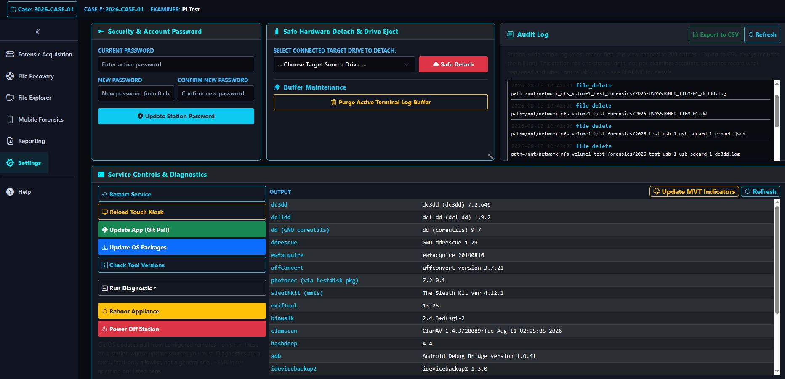
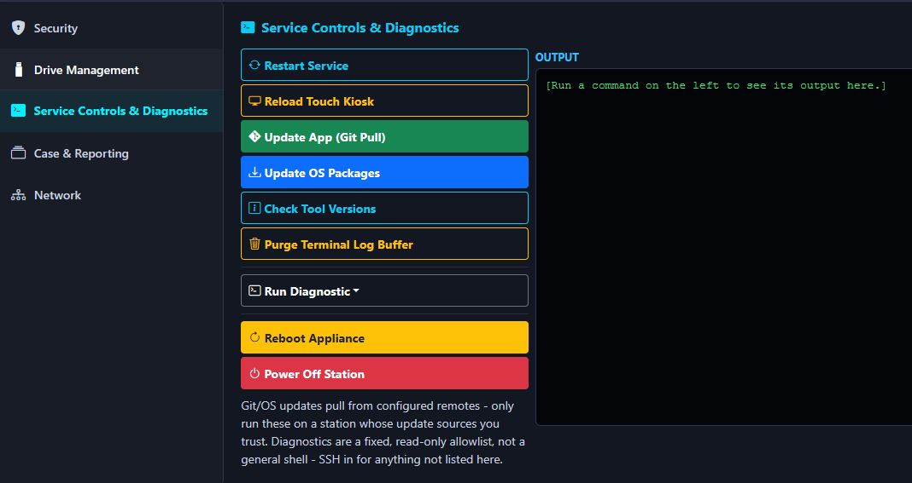

A self-hosted forensic acquisition station for Raspberry Pi and ARM boards — write-blocking, hashing, mobile device acquisition, and DFIR-structured reporting from a touchscreen kiosk or any browser on the LAN. No commercial appliance required.

Originally published as academic research — "Low Budget Forensics using ARM Based Single Board Computers" — and substantially extended since.
Dedicated appliance
The traditional path
Pi Forensics Suite
An ARM board and this software
Create a case once; acquisition, recovery, mobile, and reporting all auto-fill against it. Every screen ships with inline help — nothing here requires memorizing dd flags.
dc3dd, dcfldd, plain dd, E01, and AFF, plus ddrescue for failing drives with a Mapfile Inspector. BitLocker-, LUKS-, and VeraCrypt-encrypted sources unlock directly through one consolidated panel, a read-only Live Preview lets you look before you image, and raw↔E01 conversion runs after the fact. MD5/SHA-1/SHA-256 verification on every job, every USB device write-blocked by default.

PhotoRec, extundelete, foremost, scalpel, and read-only TestDisk partition analysis in one tool selector — one source/destination/case layout, one terminal, instead of a screen per tool.

Full iOS backup via idevicebackup2 (with optional encrypted Keychain capture) and Android via adb pull/backup/bugreport. Reads real device detail — model, OS version, IMEI, MACs — before you start, and can trigger the iOS pairing handshake itself for a device that hasn't shown its trust prompt yet. Also pulls iOS crash-report logs non-destructively, and reads SIM/UICC cards via a connected PC/SC reader.

An in-process Sleuth Kit engine (pytsk3) walks a real folder tree down to individual files — recursive search, a MACB timeline, hex dumps, EXIF/GPS metadata, an inline KML map, and a read-only SQLite table browser, all with no mount step. Runs Volatility3 or mquire against a captured memory image, and browses a BitLocker/LUKS/VeraCrypt-decrypted volume the same way.

Auto Analyze detects what you've selected and runs a curated tool set automatically. Dedicated parsers recover Windows Registry hives, Event Logs, Prefetch, Recycle Bin, and LNK data; Linux shell history, cron, and auth logs; cryptocurrency wallet files; and mobile chat/app data — plus your own saved YARA rules and known-good/known-bad hash and URL lists, with one-click MalwareBazaar/URLhaus imports. Mobile-app-specific tools round it out: recover deleted SQLite rows, static-analyze an Android APK or iOS IPA (permissions, components, signing certs, provisioning profile, optional Mach-O layer), decrypt a WhatsApp local backup against a pulled key file, and deep-parse an adb bugreport into structured sections. For a deeper pass on an already-pulled Android or iOS extraction, right-click it and run ALEAPP or iLEAPP — the same open-source parsers examiners already use, covering hundreds of app-specific artifacts, each in its own isolated environment so the two tools' conflicting dependencies never collide.

A case Overview dashboard, a timestamped Case Notes journal, a physical-evidence Custody Log, a Report Narrative, an Evidence Timeline merging filesystem and artifact data, per-job records, a station-wide audit trail, case-wide integrity re-verification, and a full-case export bundle — exported to PDF, HTML, JSON, or CSV as a Standard, DFIR, law-enforcement, or CASE/UCO report, or a template you build yourself.

TLS certificate generation with correct SANs, one-click tool installs, SMB/NFS/SFTP mounting with encrypted auto-reconnect on reboot, and network IP configuration with an automatic revert if you lock yourself out.

This station runs privileged disk commands and often sits on a network the examiner doesn't fully control. Security isn't an afterthought layered on top.
Read the full security model →Flash Raspberry Pi OS (64-bit, with Desktop), boot, and run the installer — it configures the sudoers scope, systemd service, udev write-blocking, kiosk autostart, and an optional self-signed TLS reverse proxy.
Full setup guide →# clone and install in one line $ sudo git clone https://github.com/n0sfs/pi-forensics.git \ /opt/pi-forensics && cd /opt/pi-forensics \ && sudo python3 install.py # reachable on the LAN once complete $ open https://<PI_IP_ADDRESS> # or boots straight into kiosk mode on a touchscreen # or any display attached directly to the Pi
GPLv3 · no telemetry · no account required to use it.